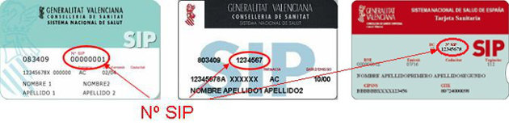

Generalitat Valenciana
Cita Previa - Identificación de la persona solicitante
A
Datos de la Persona Solicitante
Introduzca su número de tarjeta SIP
Fecha de nacimiento:
Enviar
Ejemplo de tarjetas SIP
